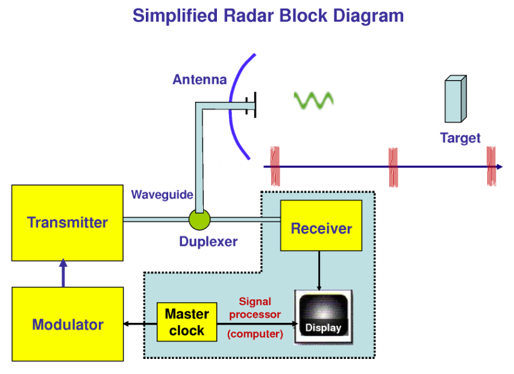
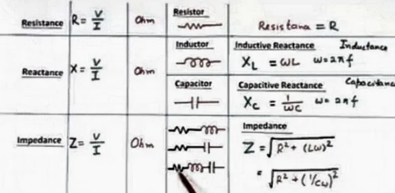
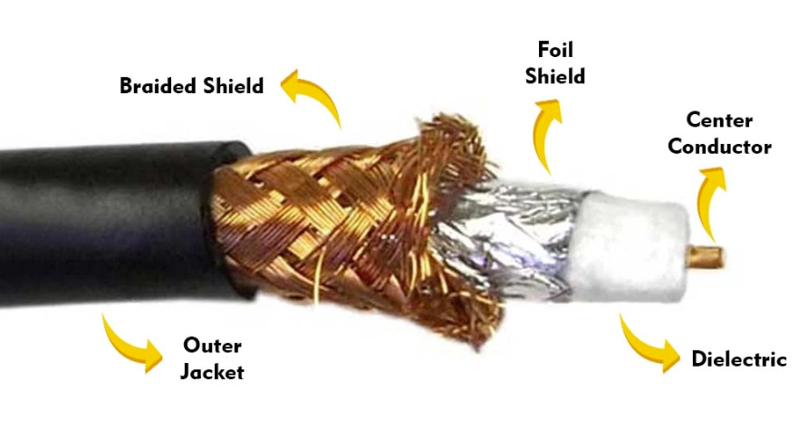
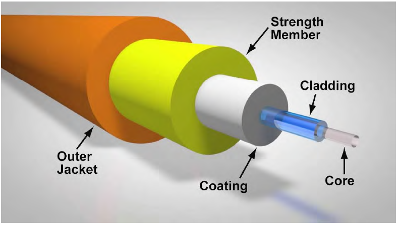
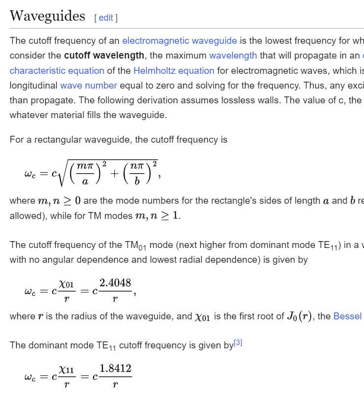
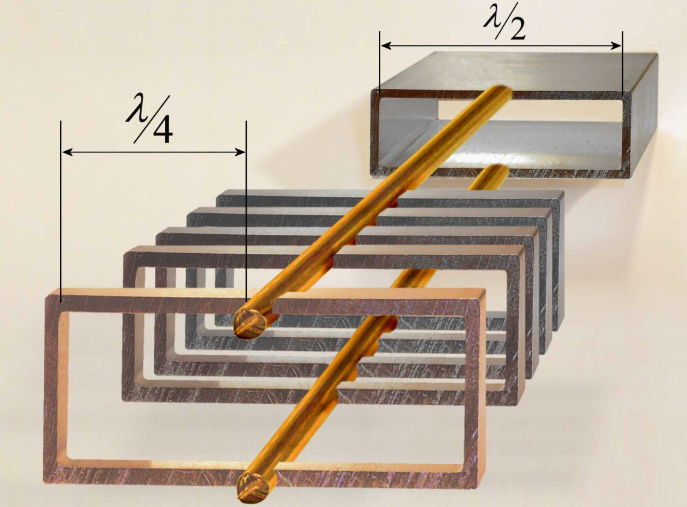
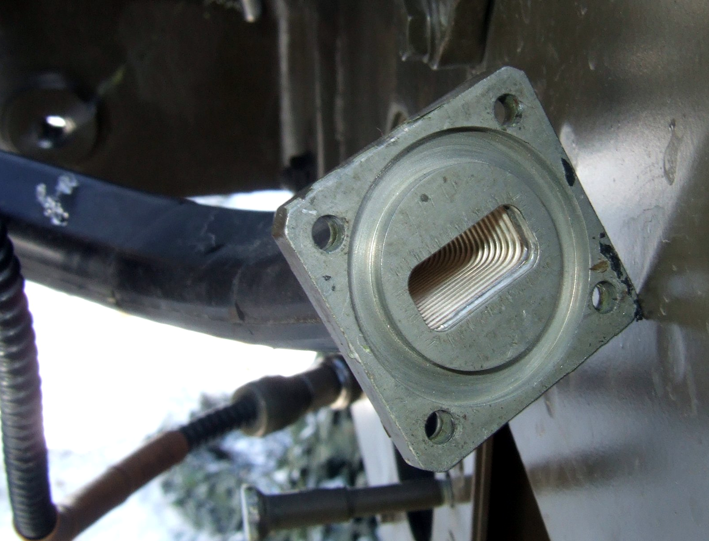
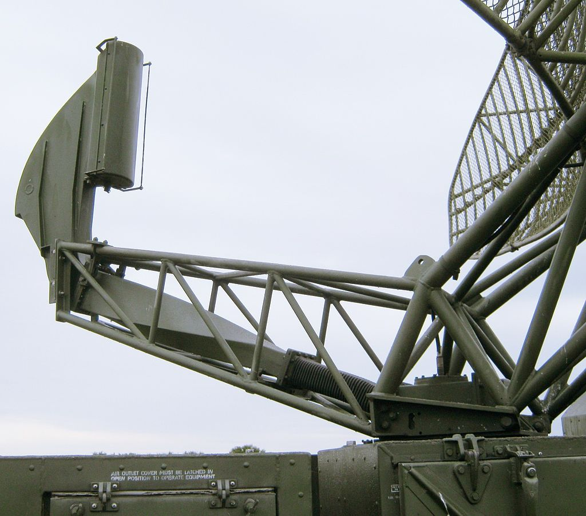
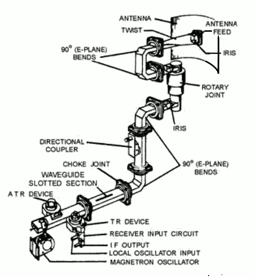

산타 크루즈에서의 레이더 이야기 (4) - 신호가 흐르는 파이프
게시: 2024-05-02T06:30:01+09:00
<Waveguide란 무엇인가> 안테나는 그냥 금속제 막대기들을 엮어 놓은 신호의 매체에 불과. 안테나를 통해 송출되는 레이더파, 즉 강력한 전자기 에너지를 가진 펄스 신호파는 어디서 생성될까? 1942년 당시엔 아직 cavity magnetron 개발이 완료되지 못했으므로 CXAM 레이더는 진공관을 이용하여 신호파를 생성. 이렇게 진공관에서 생성된 신호파는 회로를 거쳐 안테나로 향함. 그런데 안테나는 비바람에 노출된 군함 마스트 꼭대기에 설치되는 것이 보통. 당연히 안테나 몸체에 정교한 진공관과 모듈레이터 등의 전자회로를 설치해둘 수는 없고 거리가 꽤 떨어진 함체 내의 어딘가 안전한 곳에 설치해야 함.

(아주 단순화된 레이더 구조. 저 duplexer는 별 것이 아니라 그냥 필요에 따라 같은 안테나가 한번은 송신을, 한번은 수신을 하도록 그때그때 회로를 바꿔주는 똑딱이 스위치 역할을 하는 회로. 저기서 주목할 부분은 duplexer로부터 안테나 feed로 가는 길이 waveguide라고 표시된 것.)
여기서 질문. 진공관에서 나온 신호파를 전선을 통해 안테나까지 전송할 때 고려해야 할 점이 있을까? 있음. 군함은 강철로 만들어진 구조물로서 그 자체가 거대한 도체이자 자성체. 원래 구리 전선을 통해 전류를 흘려 보낼 때 저항 뿐만 아니라 inductance, reactance, impedance 등등 어려운 개념들, 그냥 쉽게 우리가 고딩때 배운 플레밍의 왼손법칙 오른손법칙 등에 따라 전자기 유도가 일어나고, 그걸 통해 주변의 도체 자성체 등에 에너지를 빼앗김. 그걸 막기 위해 신호를 흘려보내는 구리선 자체를 유전체(dielectric, 전기장 내에서 극성을 가지는 절연체)로 감싸고 그 위를 다시 구리 그물망으로 감싼 coaxial cable(동축 케이블)로 만듬.

(Reactance, impedance 등에 대해서는... 공식이 나왔으니 일단 패스... 어려운 건 그냥 패스합시다)

(동축 케이블의 구조. 이 동축 케이블과 그 속에 사용되는 합성수지의 발명에 대해서는 https://nasica1.tistory.com/654 참조.) 문제는 그 동축 케이블의 구리 그물망 자체를 통해서도 에너지를 빼앗기고 또 구리 전선 자체의 저항에 의해서도 에너지를 빼앗긴다는 것. 가뜩이나 아직 cavity magnetron이 없어서 강력한 고주파 신호를 못 만드는 것이 문제인데 이렇게 신호 강도를 빼앗기는 것은 성가신 문제, 거의 유사한 레이더를 만든 독일은 이 문제에 대해서 별다른 생각이 없었음. 그런 독일로부터 기술을 약간 전수 받아 레이더를 만든 일본은 더더욱 아무 생각이 없었음. 그래서 독일과 일본의 레이더는 cavity magnetron를 사용하기 이전의 영국/미국제 레이더와 비교를 해봐도 뭔가 성능이 떨어졌음. 그리고 독일과 일본의 레이더 개발자들은 전쟁이 끝날 때까지도 자기들의 레이더에 뭐가 부족한 것인지 전혀 몰랐음. 하지만 전자기 기술에서 확실히 앞선 영국은 이 문제에 대해 솔루션이 있었고, 그 기술을 미국과 공유하고 있었음. 바로 waveguide. 대체 웨이브가이드란 무엇일까?
(1893년 웨이브가이드의 이론적 기초를 닦은 19세기말~20세기초의 영국 물리학자 Sir Joseph John Thomson. 톰슨 경은 단순히 웨이브가이드의 아버지가 아니라 원자 단위 이하 단위의 입자인 전자(electron)을 최초로 발견한 사람으로서 그 공로로 노벨 물리학상도 받으신 분.) Waveguide란 사실 물리학을 전혀 모르는 사람도 다들 아는 물건. 의사가 아니더라도 장난감으로 만져 보았을 청진기가 바로 웨이브가이드의 전형적인 예. 즉, 소리든 전파든 빛이든, 모두 파장으로 이루어진 것인데, 그런 파장을 먼 곳에 효율적으로 보내기 위해서 가장 먼저 사용된 물건이 바로 파이프임. 파이프 벽을 통해 신호파, 그러니까 음성이 반사되면서 공기 중에 흩어지지 않고 멀리까지 비교적 또렷이 전달되는 것. 웨이브가이드의 좀 더 현대적인 예를 들자면 바로 fiber-optic cable (광케이블). 이걸 통하면 빛을 이용하여 복잡한 신호를 먼 곳으로 전송하는 것이 가능.
(세상 제일 간단한 waveguide, 바로 청진기. 소리가 파장이라는 것을 모르던 시절부터도 사람들은 저런 웨이브가이드를 잘도 만들어 썼던 셈. 이렇게 원리는 모르지만 아무튼 발명을 한 물건으로 통조림도 있음. 음식물의 부패 원인이 세균이라는 것을 전혀 모르던, 아예 세균이라는 것의 존재조차도 모르던 시절에 통조림이 발명되었다는 것은 마치 원자가 뭔지 모르지만 아무튼 원자탄을 만든 것과 거의 유사한 일.)
(위 사진은 WW2 당시 영국해군 군함에서 대공감시를 맡은 장교의 모습. 장교의 입 주변에 한 쌍의 나팔관 같은 것이 보이는데 그것이 바로 전성관(voice tube 혹은 speaking tube). 요즘 군함에서는 저런 원시적인 voice tube는 인터폰으로 대체되었지만, 아직도 조타실과 함교 등 배의 안전과 직결되는 시설끼리는 여전히 voice tube로 연결되는 경우가 종종 있다고. 이유는 짐작들하시다시피 저런 전성관은 군함이 피격되어 정전이 된 상태에서도 작동을 하기 때문.)

(Fiber-optic cable의 구조. 결국 기본 원리는 청진기와 전성관과 똑같음.) 그런데 전파도 그렇게 소리나 빛처럼 관 안에서 반사되나? 레이더가 바로 그걸 이용한 물건이니 당연히 반사됨. 금속제 파이프로 관을 만들어 그 안으로 전자파를 보내면 동축 케이블을 이용하여 신호파를 보내는 것에 비해 거의 손실 없이 보낼 수 있음. 이는 자유 전자가 풍부한 금속 표면에서 전파가 반사될 때 손실이 0에 가깝기 때문. 그래서 보통 웨이브가이드는 전기 저항이 적은 구리로 만들고, 매우 정교한 웨이브가이드는 표면에 금이나 은을 도금하기도 한다고. 다만 전파신호를 위한 웨이브가이드는 청진기나 전성관처럼 대충 만들면 안되고, 신호파의 파장 길이와 가로 또는 세로 방향으로 극성(polarization)을 넣느냐 마느냐에 따라 모양과 규격을 정확히 만들어야 함. 그걸 위해 뭔가 굉장히 복잡한 수학 공식도 있고 그런데 이 포스팅은 그냥 흥미 위주로 운영되니 여기서는 패스. (실은 제가 이해를 못합니다...)

(뭔가 설명과 공식이 복잡한데... 저는 어려서부터 수학이라면 질색이었습니다.)

(아무튼 우리는 이것만 이해하면 됨. 레이더의 웨이브가이드는 극성을 위해 사각형이 많은데 그 폭은 신호파 파장 길이의 절반. 뜻하는 바는 파장이 너무 긴 장파 레이더는 이런 웨이브가이드를 쓰기 어렵다는 것. CXAM radar의 주파수는 약 200 MHz이므로 파장 길이는 대충 1.5m. 그러니 웨이브가이드 파이프의 폭은 75cm. 그 정도면 설치 가능.)

(현대적인 레이더의 waveguide. 보통 한 방향으로 극성을 주기 때문에 저렇게 직사각형의 구조를 가진 것이 많다고.) 영국에서는 1893년부터 웨이브가이드의 기초 원리를 물리학자인 Joseph John Thomson 경이 수학적으로 풀어내는 등 기초가 탄탄했고, 1930년대에 전자부품 공업이 활발해지면서 웨이브가이드에 대한 연구가 활발했음. 특히 WW2가 임박하고 레이더 연구가 활발해지면서 손실없이 전자파 신호를 안테나로 송수신할 수 있는 실물 웨이브가이드에 대한 개발이 이루어짐. 그래서 미해군에서도 CXAM radar를 만들면서 전자회로 장치로부터 안테나 feed까지의 신호파를 약 75cm 폭의 웨이브가이드로 구축한 것.

(이 사진은 비교적 현대적인 레이더의 모습. Parabolic antenna에 전파를 쏘아주는 feed까지 뭔가 사각형의 긴 사각형 금속관이 있는 것이 보임. 도중에 이 금속관이 일부러 비틀려 있는 것이 보이는데, 이는 일부러 극성화(polarization)를 회전시키기 위한 것이라는데, 솔까말 나는 뭔 소리인지 잘 이해가 안 감.) <그래서 USS Enterprise의 레이더에서는 뭐가 문제였나?> 그런데 이렇게 waveguide가 마냥 좋기만 했던 것은 아님. 폭 75cm의 긴 금속관을 거친 비바람과 폭탄 등에 시달리는 항모에서 온전히 유지하는 것이 마냥 쉬운 것은 아니었음. 산타 크루즈 해전에서 USS Enterprise와 USS Hornet의 CXAM radar는 약속이나 한 듯이 매우 형편없는 성능을 냈는데, 엔터프라이즈는 전투 이후 정밀 검사를 해보니 그 긴 waveguide 중 일부에 문제가 있었다고. 그렇게 텅 빈 금속관이 찌그러져 있거나 갈라져 있거나 아무튼 뭔가 문제가 있었기 때문에 많은 수병들이 죽어야 했던 것.
엔터프라이즈는 그렇다치고, 호넷의 레이더는 뭐가 문제였을까? 그건 끝내 알 수 없었는데, 그 이유는 다음 주에...

(그림은 군용 radar의 실제 waveguide의 구조. 유지보수가 만만치는 않을 듯...) <한편, 독일에서는> 위에서도 언급했듯이 독일은 '기술의 독일'이라는 소리가 부끄러울 정도로 전자기학에 대해서는 큰 발전이 없었음. 특히 당시 나찌 군부는 일본 군부만큼은 아니더라도 전자기학에 대해 별로 관심이 없었고, 그래서 투자도 별로 하지 않고 '그런 거 연구할 시간에 다른 걸 연구하라'고 압박을 했음. 심지어 일부 뛰어난 연구자들이 전자기학 관련 논문을 낼 때도, 전쟁 중임에도 (영국과는 달리) 적국에서도 누구나 볼 수 있는 매체에 그 논물을 내는 것을 허락할 정도였다고. 그 결과는? 나중에 cavity magnetron을 이용한 H2S radar가 장착된 Avro Lancaster 폭격기가 일부 격추되어 거의 온전한 H2S radar를 독일이 손에 넣었을 때도, 독일 엔지니어와 물리학자들은 cavity magnetron은 무슨 물건인지 알아보았지만 waveguide에 대해서는 대체 그게 뭣때문에 설치된 것인지 전혀 짐작을 못했다고 함.